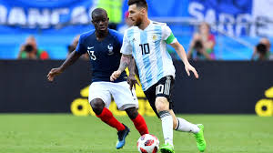
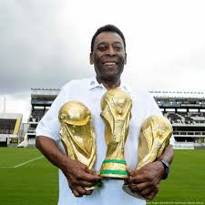

Famouse Soccer Players
For the game
CR7
1. Cristiano Ronaldo
Cristiano Ronaldo, born in Madeira, Portugal, is another player often mentioned in discussions of the greatest of all time. Known for his incredible athleticism, speed, and goal-scoring ability, Ronaldo has played for top clubs like Manchester United, Real Madrid, and Juventus. His work ethic and dedication to physical fitness have kept him at the top of his game for over two decades. Ronaldo has won five Ballon d'Or awards and has broken countless records, including becoming the all-time top scorer in UEFA Champions League history. He is also a pivotal figure for Portugal, leading them to victory in the 2016 UEFA European Championship and 2019 UEFA Nations League.the best soccer player is underneath

2. Lionel Messi
Lionel Messi is widely regarded as one of the greatest soccer players of all time. Born in Rosario, Argentina, Messi’s talent was evident from a young age. He moved to Barcelona’s youth academy, La Masia, at just 13, where he overcame a growth hormone deficiency with the club's support. Messi's remarkable dribbling skills, vision, and playmaking abilities have earned him numerous awards, including seven Ballon d'Or titles. Over his career, Messi helped Barcelona secure numerous domestic and international titles, and he also led Argentina to a Copa América victory in 2021, solidifying his legacy on the world stage
3. Pelé
Pelé, a Brazilian football legend, is considered one of the most influential soccer players ever. Born Edson Arantes do Nascimento, Pelé made his mark on the global stage during the 1958 FIFA World Cup, where at the age of 17, he led Brazil to its first title. Over the course of his career, Pelé won three World Cup titles (1958, 1962, and 1970), a record that remains unmatched. Known for his exceptional technique, vision, and goal-scoring prowess, Pelé is often referred to as the "King of Football." He also spent much of his career playing for Santos in Brazil before finishing with the New York Cosmos in the United States, where he helped grow the sport's popularity.
4. Diego Maradona
Diego Maradona, an Argentine legend, is known for his flair, creativity, and controversial moments on the field. His greatest achievement came in 1986 when he led Argentina to World Cup victory, with his famous "Hand of God" goal and the stunning "Goal of the Century" against England in the quarterfinals. Maradona’s playing style was characterized by his dribbling, balance, and vision, making him a maestro in attack. After his playing days, Maradona remained a colorful and influential figure in world soccer, coaching various clubs and national teams until his passing in 2020.- Soccer Ball
- Soccer Players
- Teams
- Clubs
- The best Palyers
5. Zinedine Zidane
Zinedine Zidane, a French football icon, is remembered for his elegance, vision, and composure on the field. Zidane led France to victory in the 1998 FIFA World Cup, scoring twice in the final, and also helped them win UEFA Euro 2000. Known for his technical skills and ability to control the tempo of a match, Zidane was instrumental in Real Madrid’s success during his time at the club, winning the UEFA Champions League and multiple domestic titles. Zidane’s playing career was marked by his intelligence and ability to make decisive plays in key moments. After retiring, Zidane transitioned into coaching, leading Real Madrid to multiple Champions League titles.6. Ronaldinho
Ronaldinho, a Brazilian magician with the ball, is celebrated for his incredible flair, creativity, and joyful playing style. His ability to execute tricks, flicks, and impossible passes made him a fan favorite worldwide. Ronaldinho won the Ballon d'Or in 2005 and was a key figure in Brazil’s 2002 FIFA World Cup victory. He had successful stints with clubs like Barcelona, where he brought an entertaining style of play and helped the club win numerous titles, including the 2006 UEFA Champions League. Ronaldinho’s style of play, characterized by his dazzling footwork and smile, left an indelible mark on the sport.7. Neymar Jr.
Neymar Jr. is one of the most skillful and marketable soccer players in the world today. Born in Brazil, Neymar began his career at Santos before moving to Europe to play for Barcelona and then Paris Saint-Germain (PSG). Known for his dribbling, speed, and flair, Neymar has been instrumental in both club and international success, helping Brazil win the 2013 FIFA Confederations Cup and the 2016 Olympic gold medal. Neymar has formed a formidable attacking trio with Lionel Messi and Luis Suárez at Barcelona, while at PSG, he has been a key figure in their quest for European glory. His career continues to evolve as he remains one of the most talented and watched players on the planet.